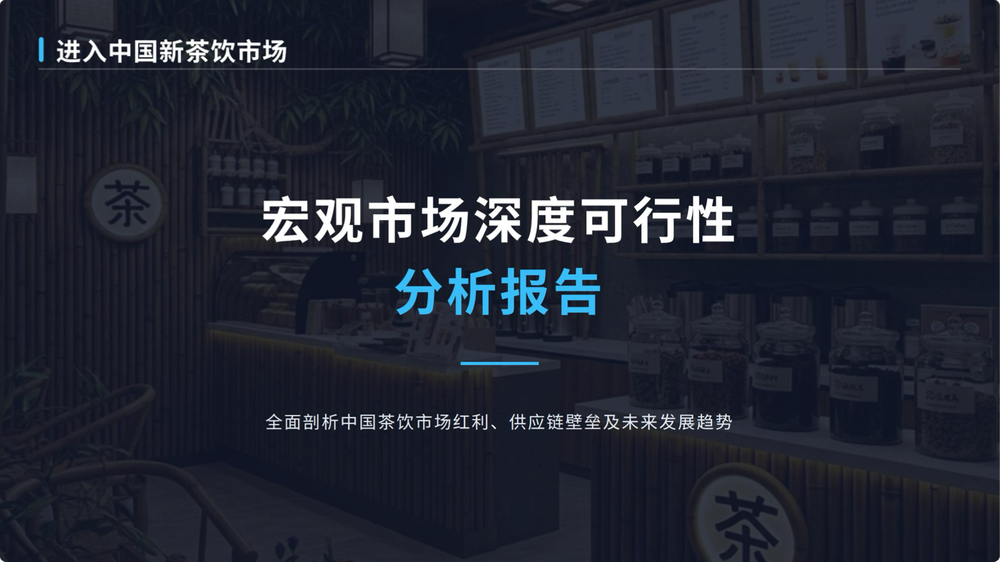

01 · PwC 战略管理咨询
中国新式茶饮市场进入可行性分析
从宏观人口、收入和餐饮消费，到单店盈利模型、进入模式、供应链壁垒和差异化策略。
I · Personal Profile
华威大学项目集与项目管理硕士在读，谢菲尔德大学会计金融与管理本科。我的经历横跨战略咨询、投资研究、银行客户经营和汽车售后服务设计，核心能力是把市场、财务、客户和流程信息整理成可判断、可执行、可汇报的商业方案。
II · Work Wall
参考作品集式项目墙设计：每一张卡片都对应一段真实经历或一个可展示成果，不再只写“参与、协助、了解”。

从宏观人口、收入和餐饮消费，到单店盈利模型、进入模式、供应链壁垒和差异化策略。
行业日报、周报、深度研究报告、上市公司三张财务报表、调研纪要和电话会议纪要。
为高端家庭越野旅行场景设计售后服务体验，强调远程救援、事故管家、实时追踪与专属顾问；另有 5 份飞书实习作品作为补充证据。
从客户资产结构和风险偏好出发，匹配理财、基金等产品；参与贷前资料收集、风险初审、客户关系维护和营销活动执行。
MSc Programme and Project Management；BSc Accounting, Finance and Management。
跨部门协作、公益活动、校方与总领馆沟通、校友网络建设。
中文与英文 PDF 简历入口，方便面试官快速查看教育背景、实习经历和项目成果。
III · Selected Cases
我主导构建从宏观到微观的研究框架，把中国现制茶饮市场拆成可进入性、竞争壁垒、运营模式和盈利模型四类问题，最终输出完整分析报告，用于支持客户进入决策。
从 14.1 亿人口、人均可支配收入超 4 万元、社零与餐饮增长，延伸到城市层级、消费者趋势、品牌竞争和单店模型。
构建“产品 · 消费场景 · 竞争品牌”三层模型，使用波特五力识别供应链深度与数字化运营两大关键壁垒。
预设自建、联营、加盟、并购四种模式，设计 A / B / C 三套准入方案，并对标奈雪的茶、蜜雪冰城、古茗等品牌。
搭建单店盈利模型，测算资本支出 30-50 万元、原料 35-40%、租金和人力各 15-20%、投资回收期 12-18 个月。
项目不是普通售后功能罗列，而是围绕“家庭长途旅行者”的真实焦虑设计服务深度：车辆故障、事故、远程路线、儿童座椅、行李、假期行程和用户对高端服务的确定性感受。
核心场景为周末、假期、露营和半远程路线。用户需要实时状态、人工安抚、专业接送、数字交车和少交接环节。
对比 Land Rover、Ford F-150 Raptor、Lincoln Navigator，分别提炼冒险救援、硬派使用和豪华家庭服务逻辑。
提出 Essential Care、Travel Assurance、Premium Concierge 三层模块，区分基础保养、旅行保障和高触达管家服务。
远程救援协助、家庭旅行保护热线、事故管家、长途出行前检查、实时服务追踪、专属 Kunlun 顾问。
Selected Internship Artifacts
前两份为可直接打开的完整交付物：普华永道中国奶茶市场进入可行性分析 PDF、小米汽车 Kunlun 服务包 PPT。下方保留 5 份小米汽车售后部线上实习飞书材料，方便面试官继续查看项目过程。
IV · Finance Experience
V · Education & Leadership
项目规划管理与控制、组织人员与绩效、项目财务管理、变革管理、多项目与项目群环境管理。
管理会计、财务会计、公司分析与管理、应用会计与财务管理、会计与咨询案例研究；2021 年谢菲尔德大学奖学金。
统筹公益与慈善活动，作为学生、校方和中国驻曼彻斯特总领馆之间的沟通桥梁，推动校友会创建与校友网络建设。
统筹部门活动计划，参与救护员资格考核流程设计与现场监考，策划艾滋病预防与反歧视主题活动。
VI · Skills
VII · Resume & Contact
手机：18846839735；邮箱：shicaodeyouxiang@163.com；微信：shicaowx。